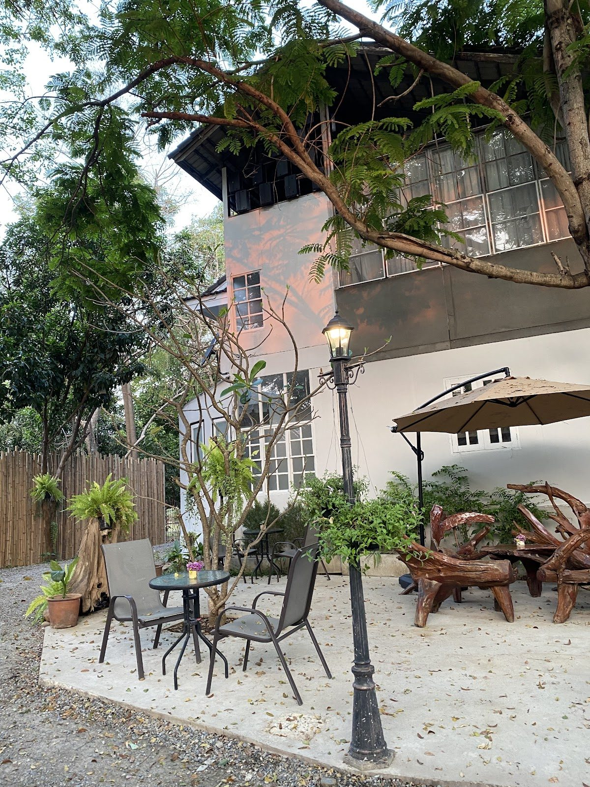
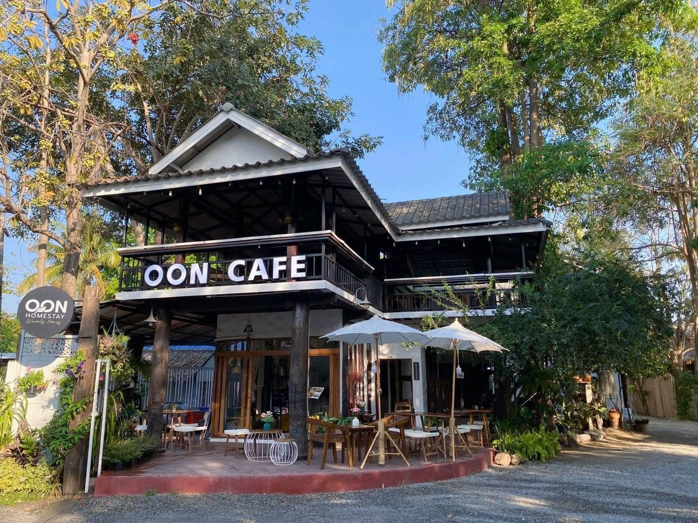
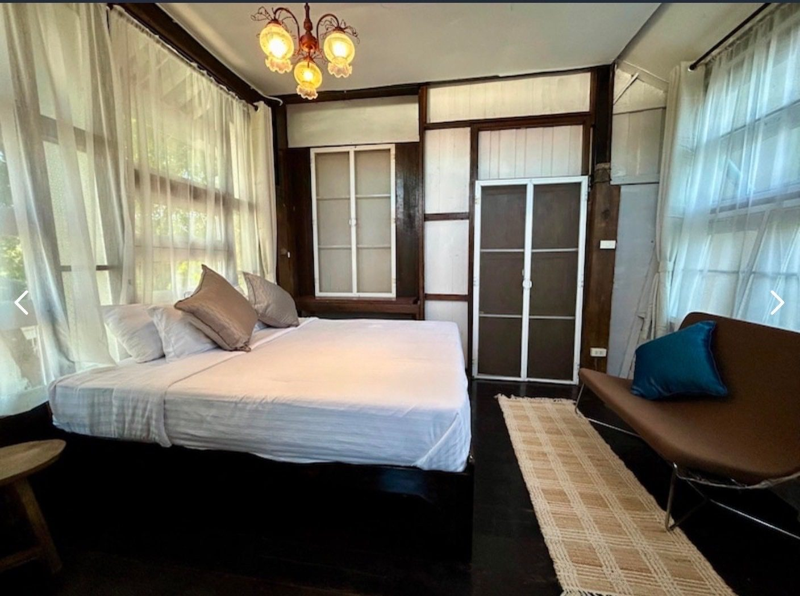
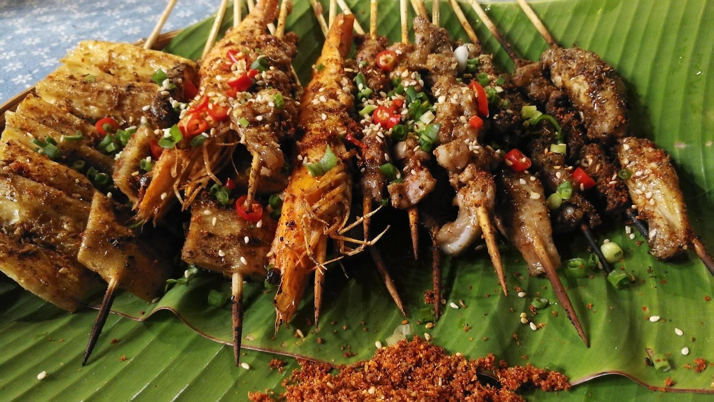
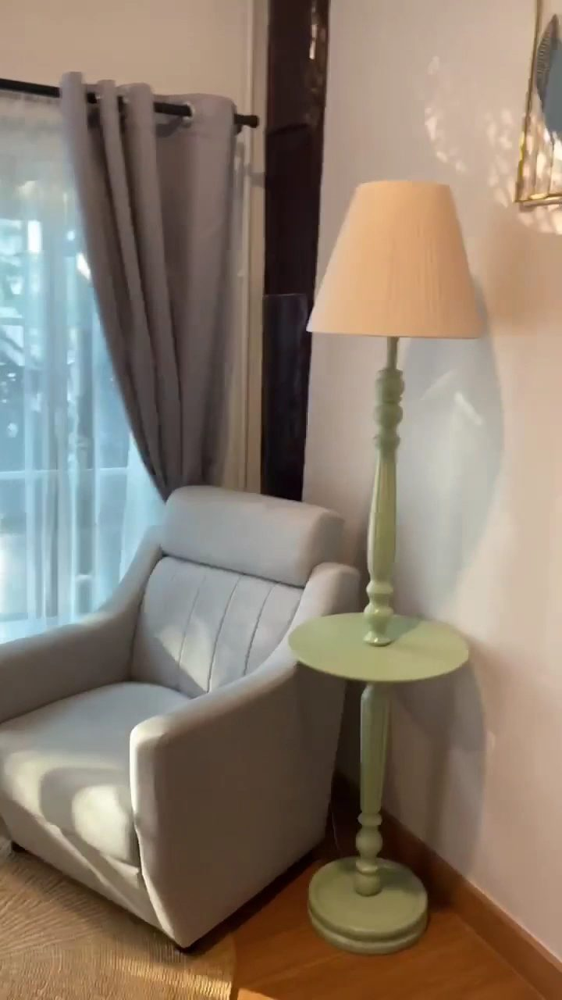

A teak garden house with its own little café — the kind of place that hugs you the moment you drop your bag.
Ob-Un is a small family homestay behind a leafy gate in Suthep, where the lane runs quiet beside the Chonprathan canal. Teak floors, art on the walls, a garden you'll want to sit in, and OON Café right out front for the first coffee of the day.
Tap and Nui run it themselves. Nui's homemade breakfast is the reason people write that they felt at home — and the reason a lot of one-night bookings quietly turn into a week.

OON Café opens before you're properly awake — real coffee, a homemade breakfast, the garden waking up.
A book, the shade, and the sound of the canal. Nowhere to be, which is the point.
CMU, Nimman and the old city are minutes away — then back before the light goes gold.
Warm light on teak, a plate from the kitchen, and the day folding itself up gently.

Cool teak rooms with air-conditioning, hot showers and beds you sink into — simple, spotless, full of small vintage touches.

OON Café does the mornings and the in-betweens — real coffee, homemade breakfast, and a few Thai plates when you don't feel like going out.

81/1 Moo 6, Ban Mai, Liap Khlong Chonprathan Rd, Suthep, Chiang Mai 50200.
Open the mapA real homeOb-Un is a REAL home — beautiful, full of art and vintage decoration, sweet and cozy. Tap and Nui are such great hosts.Google review
The feelingCozy, warm, helpful and peaceful. Homemade breakfast, a clean room — a truly special stay.Google review
The verdictThe best homestay I've ever stayed at in Thailand.Cece
Call and we'll answer — ask for a room, and ask for LINE while you're at it. Tap & Nui will do the rest.